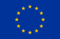
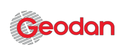

Maak animaties van de natuur om je heen
Met de GrowApp kun je een timelapse filmpje maken van hoe de natuur om je heen door de seizoenen en jaren heen verandert. Je doet dit door regelmatig foto’s te nemen met je smartphone van dezelfde plaats. Met jouw foto’s help je ook nog eens wetenschappers die het effect van klimaatverandering op de natuur bestuderen.
Meer achtergrond info en instructies...
Bekijken, filteren en delen
Op www.growapp.today kun je alle foto’s en animaties bekijken en er ook makkelijk in zoeken bijvoorbeeld op een bepaalde periode. Je kunt er je animaties ook delen (via social media).
Nieuwsbrief
Updates zijn te vinden op: Nature Today.
Meld je aan voor de GrowApp nieuwsbrief…
Scholen
Voor scholen is er een internationale campagne en Nederlandstalig lesmateriaal.Zeven focus-soorten
Help klimaat wetenschappers door foto’s te nemen van de volgende 7 soorten:Als je de foto neemt, geef dan ook onderstaande #tag door in het veld ‘Omschrijving’:
- Zomereik (Quercus robur), #oak
- Hazelaar (Corylus avellana), #hazel
- Beuk (Fagus sylvatica), #beech
- Ruwe berk (Betula pendula), #birch
- Zure kers (Prunus cerasus), #cherry
- Winterlinde (Tilia cordata), #lime
- Vijg (Ficus carica), #fig
API
Het is mogelijk om gegevens uit de database van de GrowApp te downloaden. Bekijk documentatie over de API van GrowApp...Ontwikkeling
De app is ontwikkeld op basis van een idee van Stichting GLOBE Nederland. Het technische ontwerp van de app en bijbehorende website komt van Geodan en KartaContact
info@growapp.todayPartners
De GrowApp is een initiatief van:





Naamsvermeldingen
- Map client software
- OpenLayers 4.0, proj4
- Map server software
- Mapproxy
- Achtergrondkaart
- Openstreetmap, license, © CARTO
- Beeldverwerking en animatie
- GraphicsMagic and GM for nodejs
- Foto's bladeren
- Photoswipe
- Extra kaartlagen
- Nasa worldview
- Layout en icons
- Material Design Lite and Material Design Icons
- Native app framework
- Apache cordova en Android SDK en community camera plugin
- Database
- Postgres and PostGIS
- Maatwerk Server
- NodeJs
- Logo
- Gebaseerd op dit ontwerp